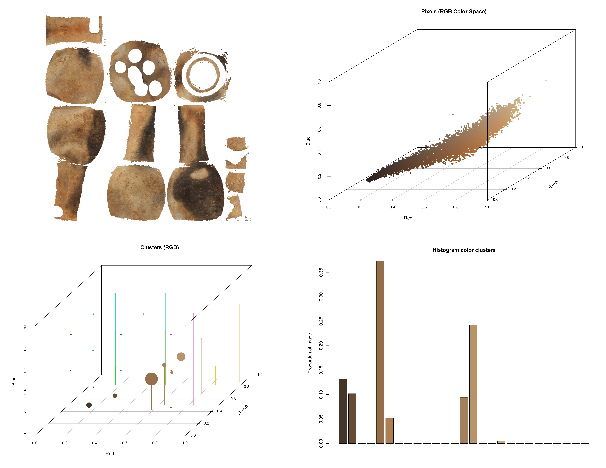
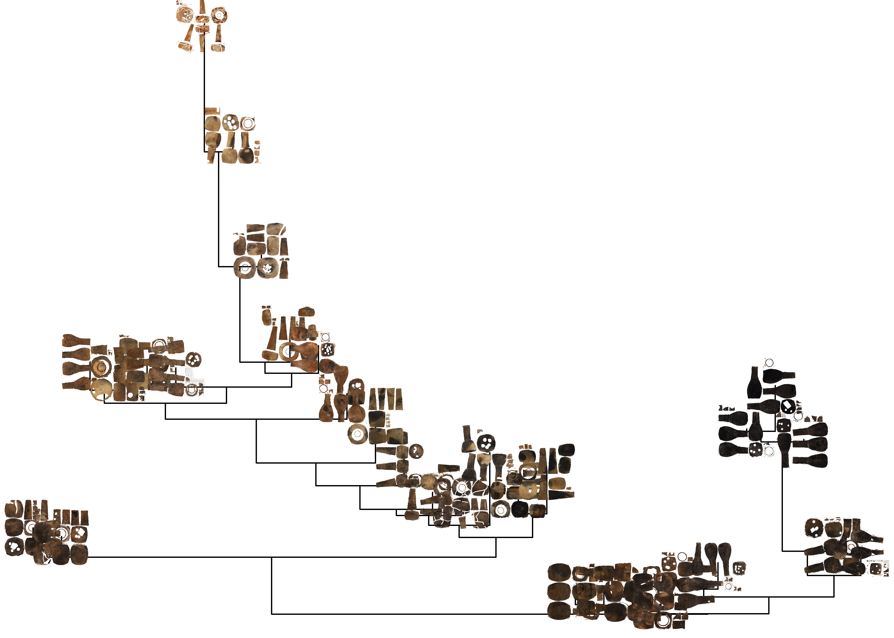
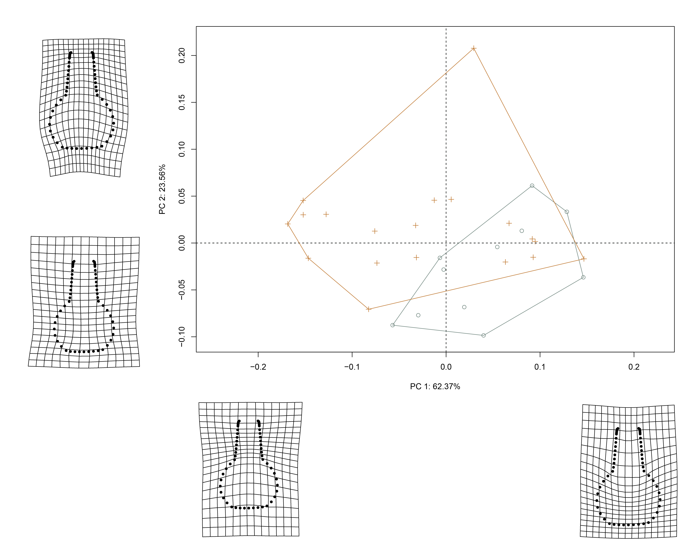

knitr::include_graphics('./img/fig1.png')

![]()
Each [Caddo] clan had its own shape to make its pottery. One clan never thought of making anything the same pattern of another clan. You could tell who made the pottery by the shape (Cassaway 1937, 395).
Color is afforded primacy in ceramic production inquiries, as it provides evidence linked with use, raw material variability, and method of firing. This study focuses on the latter, and asks whether Caddo potters conditioned the morphology of bottles based on the method by which they intended to fire them. Thirty three-dimensional (3D) scans of Hickory Engraved and Smithport Plain bottles were collected from five museums and repositories, and provide 360-degree coverage of exterior colors associated with each vessel. Texture (color) files were used in a quantitative analysis of color where vessels were subsequently binned into two groups based on firing method; oxidized and reduced. A geographic information system was subsequently used to identify core production areas associated each firing method, and 3D meshes were then analyzed using the tools of geometric morphometrics to assess whether bottle shape and size differ by method of firing. Results demonstrate a single core production area for the reduced bottles, and two—one north; the other, south—for oxidized bottles, as well as significant differences in both color and bottle shape, but not size, by firing method. Thus, Formative/Early Caddo potters conditioned the shape of Hickory Engraved and Smithport Plain bottles based upon their intended firing method. This finding provides evidence for two discrete, contemporary, and sympatric Caddo potting communities delimited by macroscopic production attributes, advancing our understanding of Caddo decision-making behaviors related to bottle production.
Caddo; NAGPRA; ceramic; pottery; 3D; computational archaeology; museum studies; digital humanities; non-Western art history; STEM; STEAM
knitr::include_graphics('./img/fig1.png')
Each of the 30 vessels was scanned (3D) with a Creaform GoSCAN20 to capture color and geometry. Following data collection, each scan was exported as an .obj file, which includes a bitmap image of the surface color of each vessel. Images were subsequently transferred to a transparent background in Photoshop in preparation for analysis using the colordistance package in R (R Core Development Team, 2023; Weller and Westneat 2019). Upper and lower limits of the color range were determined based on colors present in the sample. Ten thousand randomly selected pixels were plotted from each image, a histogram binning method was used to group similar colors for each specimen, and pairwise distances between histograms were computed using earth mover’s distance (Rubner and Tomasi 2001; Weller and Westneat 2019).
knitr::include_graphics('./img/fig2.png')
The bottles were coded as ColorGroup A (reduced) and ColorGroup B (oxidized) using the output from a neighbor-joining tree, calculated using the color distance matrix. To test whether vessels differ in color according to ColorGroup assignment, the color distance matrix was exported and joined with the categorical data. Those data were used in a permutational multivariate analysis of variance in the vegan package to evaluate whether vessel color differs by firing method (permutations: 10,000; Rsq: 0.4342; Pr(>F): 9.999e-05).
knitr::include_graphics('./img/fig3.png')
Coordinate data were subsequently harvested and joined with the categorical dataset, and all data were imported to a GIS for a distribution analysis to identify core production areas. The GIS environment was modified to ensure that both distributions (oxidized and reduced) would share the same extent, defined by the distribution of all sites in the sample. The distribution of sites serves as a proxy for the distribution of the two types (Hickory Engraved and Smithport Plain), where a minimum convex polygon could be fitted to those data as a means of delimiting their utilization distribution (sensu Worton 1989). Within that utilization distribution, core production areas were defined using kernel density, where raster values from the location of each site were subsequently exported to identify the 50 and 75 percent quantiles. Each raster was reclassified using three classifications; the darkest indicating the 50 percent quantile, another lighter color at 75, and a third—transparent—holding the remainder. Results demonstrate a single core area related to the production of reduced bottles; however, oxidized bottle production occurred across two core areas (one north; the other south). All core production areas occur in the Red River Basin inside the ancestral Caddo area.
knitr::include_graphics('./img/geo.jpg')
Landmark data were aligned to a global coordinate system (Bookstein et al. 1999; Gunz, Mitteroecker, and Bookstein 2005; Kendall 1981, 1984; Slice 2001), achieved through generalized Procrustes superimposition (Bookstein 1986; Rohlf and Slice 1990; Rohlf 1999) in R using the geomorph and RRPP packages (Adams and Collyer 2015; Collyer and Adams 2018; Adams et al. 2017; Adams and Otarola-Castillo 2013; Baken et al. 2021). Procrustes superimposition translates and rotates the coordinate data to allow for comparisons among objects, while also scaling each bottle using unit-centroid size—the square root of the sum of squared distances from each landmark to the specimen’s centroid (Chapman 1990; Dryden and Mardia 1998; Gower 1975; Rohlf and Slice 1990). The geomorph package uses a partial Procrustes superimposition that projects the aligned specimens into tangent space subsequent to alignment in preparation for the use of multivariate methods that assume linear space (Dryden and Mardia 1993; Kent and Mardia 2001; Rohlf 1999; Slice 2001).
Principal components analysis (Jolliffe 2002) was used to visualize shape variation among the bottles, and the scatterplot represents the dispersion of shapes in tangent space (Adams, Rohlf, and Slice 2013; Bookstein 1991; O’Higgins and Jones 1998; Rohlf and Marcus 1993). Shape ranges described by each principal axis are commonly visualized using thin-plate spline warping of a reference mesh (Klingenberg 2013; Sherratt et al. 2014).
knitr::include_graphics('./img/fig4.png')
To assess whether shape and size differs by ColorGroup, Procrustes ANOVAs (Goodall 1991) were run that enlist effect-sizes (zscores) computed as standard deviates of the generated sampling distributions (Collyer, Sekora, and Adams 2015). A residual randomization permutation procedure (RRPP; n = 10,000 permutations) was used for all Procrustes ANOVAs (Adams and Collyer 2015; Collyer and Adams 2018), which has higher statistical power and a greater ability to identify patterns in the data should they be present (Anderson and Ter Braak 2003).
knitr::include_graphics('./img/fig5.png')Results demonstrate a significant difference in size (RRPP: 10,000; Rsq: 0.14223; Pr(>F): 0.0373)—but not shape (_RRPP: 10,000; Rsq: 0.05789; Pr(>F): 0.1652)—by type, where the Hickory Engraved bottles were found to be larger than the Smithport Plain bottles. In the analysis of bottle morphology by firing method, vessels were found to differ in shape (RRPP: 10,000; Rsq: 0.11456; Pr(>F): 0.0275), but not size (RRPP: 10,000; Rsq: 0.00224; Pr(>F): 0.8008).
This study used a quantitative analysis of 3D vessel color to demarcate oxidized and reduced Hickory Engraved and Smithport Plain bottles, demonstrating a methodologically rigorous and reproducible approach to categorizing continuous variables associated with color. Bottles in each group were found to differ in shape, but not size, and while the oxidized vessels were produced in two core areas, reduced vessels were produced in one. Thus, Formative/Early Caddo potters conditioned the shape of Hickory Engraved and Smithport Plain bottles based upon the intended firing method.
While ancillary to the primary research question, a morphological comparison of Hickory Engraved and Smithport Plain bottles was included in this analysis. Similarities in shape between the two types are known—and demonstrated here—however, what was not known is that Hickory Engraved bottles are significantly larger. This difference in volume may translate to a difference in which these two bottle types may have been used by the Caddo.
This finding provides evidence for two discrete, contemporary, and sympatric Caddo potting communities delimited by macroscopic production attributes, and posits differential production-based intentions among Caddo potters. While spatial overlap occurs between the oxidized and reduced core production areas in the north, the southern core production area is geographically isolated. This then begs the question of whether extant morphological differences may be apparent between the two core production areas for oxidized bottles. While beyond the purview of the current study, it has been demonstrated elsewhere that differences exist between ceramics (Selden Jr. 2018a, 2018b, 2019, 2021), bifaces (Selden Jr., Dockall, and Dubied 2020; Selden Jr., Dockall, and Shafer 2018), and arrow points (Selden Jr. and Dockall 2023; Selden Jr. 2023; Selden Jr. et al. 2021) recovered from the northern and southern Caddo behavioral regions. Thus, while further study is warranted, should a morphological difference exist between the northern and southern core production areas for oxidized bottles, such a finding would not come as a surprise.
My thanks to the Caddo Nation of Oklahoma, the Caddo Nation Tribal Council, Tribal Chairman, and Tribal Historic Preservation Office for permission and access to NAGPRA and previously repatriated collections. I also extend my gratitude to the Caddo Nation Heritage Museum, Williamson Museum, Louisiana State Exhibit Museum, Texas Archeological Research Laboratory, and the University of Arkansas Museum for their assistance with access to Caddo bottles in their care.
Special thanks to Mary C. Suter and Anne M. Early for their time and guidance regarding the Hickory Engraved and Smithport Plain vessels in the University of Arkansas Museum collections. Thanks also to John E. Dockall, David H. Dye, Harry J. Shafer, Hiram F. (Pete) Gregory, Christian S. Hoggard, Mary Beth Trubitt, and David K. Thulman for their comments and constructive criticisms on the ongoing analyses of Caddo material culture, and to Emma Sherratt, Kersten Bergstrom, Lauren N. Butaric, Dean C. Adams, and Michael L. Collyer for their constructive criticisms, general comments, and suggestions throughout the development of this research program.
Components of this analytical work flow were developed and funded by a Preservation Technology and Training grant (P14AP00138) to the author from the National Center for Preservation Technology and Training (NCPTT), and additional grants from the Caddo Nation of Oklahoma, National Forests and Grasslands in Texas (15-PA-11081300-033) and the United States Forest Service (20-PA-11081300-074). Funding and logistical support to analyze the Caddo bottles for this project was provided by the Heritage Research Center at Stephen F. Austin State University, as well as a data and analytics grant and SPARC residency from the Spatial Archaeometry Research Collaboration in the Center for Advanced Spatial Technology at the University of Arkansas.
Reproducibility—the ability to recompute results—and replicability—the chances other experimenters will achieve a consistent result—are two foundational characteristics of successful scientific research (Leek and Peng 2015). The analysis code associated with this project can be accessed through this document, is available in the GitHub repository (https://github.com/seldenlab/hfesp.1), and digitally curated on the Open Science Framework (DOI: 10.17605/OSF.IO/QC8D5). The reproducible nature of this enterprise provides a means for others to critically assess and evaluate the various analytical components (Gray and Marwick 2019; Peng 2011; Gandrud 2014), which is a necessary requirement for the production of reliable knowledge.
Reproducibility projects in psychology and cancer biology are impacting current research practices across all domains. Examples of reproducible research are becoming more abundant in archaeology (Marwick 2016; Ivanovaite et al. 2020; Selden Jr., Dockall, and Shafer 2018; Selden Jr., Dockall, and Dubied 2020; Selden Jr. et al. 2021; Selden Jr. 2023), and the next generation of archaeologists are learning those tools and methods needed to reproduce and/or replicate research results (Marwick et al. 2019). Reproducible and replicable research work flows are often employed at the highest levels of humanities-based inquiries to mitigate concern or doubt regarding proper execution, and is of particular import should the results have—explicitly or implicitly—a major impact on scientific progress (Peels and Bouter 2018).
This version of the analysis was generated on 2023-04-19 06:13:18 using the following computational environment and dependencies:
# what R packages and versions were used?
if ("devtools" %in% installed.packages()) devtools::session_info()─ Session info ───────────────────────────────────────────────────────────────
setting value
version R version 4.2.3 (2023-03-15)
os macOS Ventura 13.3.1
system aarch64, darwin20
ui X11
language (EN)
collate en_US.UTF-8
ctype en_US.UTF-8
tz America/Chicago
date 2023-04-19
pandoc 2.19.2 @ /Applications/RStudio.app/Contents/Resources/app/quarto/bin/tools/ (via rmarkdown)
─ Packages ───────────────────────────────────────────────────────────────────
package * version date (UTC) lib source
cachem 1.0.7 2023-02-24 [1] CRAN (R 4.2.0)
callr 3.7.3 2022-11-02 [1] CRAN (R 4.2.0)
cli 3.6.1 2023-03-23 [1] CRAN (R 4.2.0)
crayon 1.5.2 2022-09-29 [1] CRAN (R 4.2.0)
devtools 2.4.5 2022-10-11 [1] CRAN (R 4.2.0)
digest 0.6.31 2022-12-11 [1] CRAN (R 4.2.0)
ellipsis 0.3.2 2021-04-29 [1] CRAN (R 4.2.0)
evaluate 0.20 2023-01-17 [1] CRAN (R 4.2.0)
fastmap 1.1.1 2023-02-24 [1] CRAN (R 4.2.0)
fs 1.6.1 2023-02-06 [1] CRAN (R 4.2.0)
glue 1.6.2 2022-02-24 [1] CRAN (R 4.2.0)
htmltools 0.5.5 2023-03-23 [1] CRAN (R 4.2.0)
htmlwidgets 1.6.2 2023-03-17 [1] CRAN (R 4.2.0)
httpuv 1.6.9 2023-02-14 [1] CRAN (R 4.2.0)
jpeg 0.1-10 2022-11-29 [1] CRAN (R 4.2.0)
jsonlite 1.8.4 2022-12-06 [1] CRAN (R 4.2.0)
knitr 1.42 2023-01-25 [1] CRAN (R 4.2.0)
later 1.3.0 2021-08-18 [1] CRAN (R 4.2.0)
lifecycle 1.0.3 2022-10-07 [1] CRAN (R 4.2.0)
magrittr 2.0.3 2022-03-30 [1] CRAN (R 4.2.0)
memoise 2.0.1 2021-11-26 [1] CRAN (R 4.2.0)
mime 0.12 2021-09-28 [1] CRAN (R 4.2.0)
miniUI 0.1.1.1 2018-05-18 [1] CRAN (R 4.2.0)
pkgbuild 1.4.0 2022-11-27 [1] CRAN (R 4.2.0)
pkgload 1.3.2 2022-11-16 [1] CRAN (R 4.2.0)
png 0.1-8 2022-11-29 [1] CRAN (R 4.2.0)
prettyunits 1.1.1 2020-01-24 [1] CRAN (R 4.2.0)
processx 3.8.1 2023-04-18 [1] CRAN (R 4.2.3)
profvis 0.3.7 2020-11-02 [1] CRAN (R 4.2.0)
promises 1.2.0.1 2021-02-11 [1] CRAN (R 4.2.0)
ps 1.7.4 2023-04-02 [1] CRAN (R 4.2.3)
purrr 1.0.1 2023-01-10 [1] CRAN (R 4.2.0)
R6 2.5.1 2021-08-19 [1] CRAN (R 4.2.0)
Rcpp 1.0.10 2023-01-22 [1] CRAN (R 4.2.0)
remotes 2.4.2 2021-11-30 [1] CRAN (R 4.2.0)
rlang 1.1.0 2023-03-14 [1] CRAN (R 4.2.0)
rmarkdown 2.21 2023-03-26 [1] CRAN (R 4.2.2)
rstudioapi 0.14 2022-08-22 [1] CRAN (R 4.2.0)
sessioninfo 1.2.2 2021-12-06 [1] CRAN (R 4.2.0)
shiny 1.7.4 2022-12-15 [1] CRAN (R 4.2.0)
stringi 1.7.12 2023-01-11 [1] CRAN (R 4.2.0)
stringr 1.5.0 2022-12-02 [1] CRAN (R 4.2.0)
urlchecker 1.0.1 2021-11-30 [1] CRAN (R 4.2.0)
usethis 2.1.6 2022-05-25 [1] CRAN (R 4.2.0)
vctrs 0.6.1 2023-03-22 [1] CRAN (R 4.2.0)
xfun 0.38 2023-03-24 [1] CRAN (R 4.2.2)
xtable 1.8-4 2019-04-21 [1] CRAN (R 4.2.0)
yaml 2.3.7 2023-01-23 [1] CRAN (R 4.2.0)
[1] /Library/Frameworks/R.framework/Versions/4.2-arm64/Resources/library
──────────────────────────────────────────────────────────────────────────────Current Git commit details are:
# where can I find this commit?
if ("git2r" %in% installed.packages() & git2r::in_repository(path = ".")) git2r::repository(here::here()) Local: main /Users/seldenjrz/Documents/github/hfesp.1
Remote: main @ origin (https://github.com/seldenlab/hfesp.1)
Head: [37780a9] 2023-03-19: <edit index>